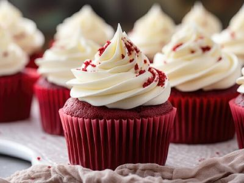
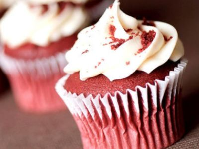
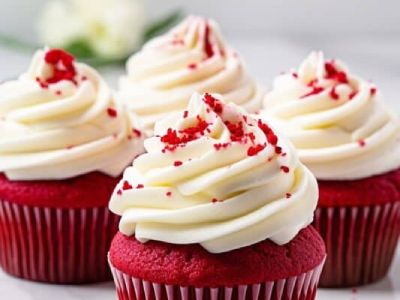
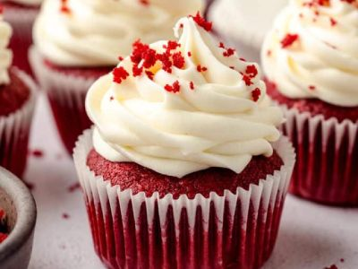

Cupcake de Red Velvet com Cream Cheese
Preço: R$ 9,50
Temanho: Médio
Galeria de Fotos




Descrição do Produto
Uma combinação sofisticada de sabores e texturas. A massa aveludada, de cor vermelha vibrante com um leve toque de cacau, é coroada por uma generosa e refrescante cobertura de cream cheese, que equilibra perfeitamente a doçura.
Ingredientes
- Farinha de trigo
- Açúcar refinado
- Ovos
- Leitelho (buttermilk)
- Cacau em pó
- Vinagre de maçã
- Corante vermelho
- Queijo cream cheese
- Manteiga
- Açúcar de confeiteiro
Características Básicas
| Característica | Detalhe |
|---|---|
| Tamanho | Médio |
| Sabor do Bolo | Red Velvet (Baunilha e Cacau) |
| Sabor da Cobertura | Cream Cheese |
| Cor Principal | Vermelha |
Informações Nutricionais (Por porção)
| Nutriente | Detalhe |
|---|---|
| Valor Energético | 390 kcal |
| Carboidratos | 48g |
| Proteínas | 6g |
| Gorduras Totais | 20g |